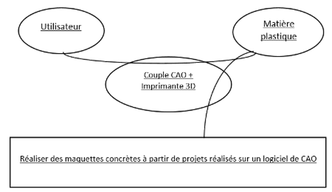

L’impression 3D (aussi appelée fabrication additive ou numérique directe) est l’action de fabriquer un objet à partir d’une maquette numérique créée à l’aide d’un logiciel de conception assistée par ordinateur (CAO) tel que SolidWorks, AutoCAD, TopSolid et bien d’autres encore.
Diagramme « Bête à Cornes » :

L’impression tridimensionnelle est un outil facile d’accès. Pour réaliser son projet, l'utilisateur n'a à connaître que les bases de son logiciel de CAO puis de lancer l'impression. Des kits réservés aux particuliers sont disponibles, comme par exemple : "Do It Yourself", commercialisé en 2009 par MakerBot Industries.
De nos jours, l’impression tridimensionnelle connaît un réel engouement auprès de la population. Ce système n’est toutefois pas récent. En effet, cette technologie naquit vers le milieu des années 80. Le concept a été défini en 1960 par Arthur Clarke qui mentionnait une ‘’machine à répliquer’’ pour révolutionner le monde, et c’est vers 1983-1984 que les premières machines à impressions 3D, alors appelées "machine à prototypage", furent conçues par Charles Hull, qui est le fondateur du procédé de stéréolitographie (l’objet est obtenu par une lumière UV qui solidifie couche par couche du plastique liquide), procédé sur lequel repose les première machines de 3D Systems, sachant que leur utilisation ne servait qu'à la confection de prototypes pour les grandes usines de production.